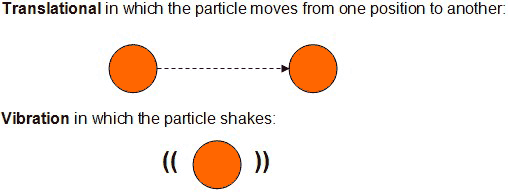

Unit 5: Gases and Atmospheric Chemistry
Activity 2: Relationships
Content
Journal

|
As you are reading through this activity and using the interactive components, keep track of the bold-faced terms and headings and their meanings, examples and images. Include your own understanding of these terms in your notes. Pay close attention to any formulas representing gaseous relationships. |
|---|
Air
Adapted Image courtesy of NASA |
Air is a gaseous mixture consisting of 78% nitrogen gas, N2; 21% oxygen gas, O2; and traces of other gases such as water, carbon dioxide, argon, and methane. |
At the time of creation, the Earth’s atmosphere was in concert with the land and water. The natural cycles of water, carbon and nitrogen, amongst others, were well balanced. Increased human activities have created an imbalance in the natural state of the Earth.
There are greater amounts and varieties of substances in the Earth’s atmosphere. But we need many of these gases; their presence provides a resource. Carbonated drinks need carbon dioxide. Dry ice used in concerts is really solid carbon dioxide. When you blow up a balloon, you fill it up with your breath. There are many useful applications for gases and these applications are dependent on the physical properties and nature of gases.
States of Matter
The three commonly known states of matter are solid, liquid and gas. Each of these states has its own distinct physical properties and its behaviour is a result of these unique properties. The forces of attraction and repulsion between particles of a substance are the major drivers of the state of matter. Conditions, such as temperature and pressure also play important roles in the physical properties of matter as does the mass and volume of a substance.
States of Matter
|
Adapted Image courtesy of NASA |

 Question
Question
- Using the image above, list the states of matter from the weakest forces of attraction to the strongest, between its particles.
 Answer
Answer

|
Watch and participate in the interactive simulation titled Particulate Nature of Matter: View of a Metal at Different Temperatures. Please be aware, that, depending on your Internet connection speed, all clips on this page may take a few minutes to download. You can always continue reading the remainder of this page while you wait. |
|---|
Question
- How does temperature affect the movement of particles?
Answer
|
|
Watch and participate in the interactive tutorial titled: Tutorial: Particulate Nature. Please be aware, that, depending on your Internet connection speed, all clips on this page may take a few minutes to download. You can always continue reading the remainder of this page while you wait. |
|---|
There are three types of particle movement:

Rotational in which the particle spins along its axis. Here is an example of the Earth spinning in its axis:
Additional physical characteristics of particles, in the three states of matter, include the following:
Solids
- The arrangement of particles is in a regular pattern.
- Particles only vibrate in one position.
- Forces of attraction are the strongest in a solid.
Liquids
- There is more freedom of movement for the particles, but the forces of attractions still keep them together.
- Forces of attraction, between particles, are weaker than those in the liquid state, but stronger than those in the gaseous state.
- Particles exhibit vibrational, rotational and translational movements.
Gases
- Gas particles have a greater freedom of all types of movement, especially translational movement.
- Forces of attraction between particles are the weakest in comparison to those in a liquid and solid.
Kinetic Molecular Theory
|
|
Watch and participate in the interactive simulation Effusion 2. Please be aware, that, depending on your Internet connection speed, all clips on this page may take a few minutes to download. You can always continue reading the remainder of this page while you wait. |
|---|
After completing the simulation, answer the following questions:
Questions
- In comparing molecules of different masses, which molecule will move faster given the same conditions?
Answer
- Compare the distances travelled by the molecules to their actual size.
Answer
- In their continuous motion, do the molecules travel in crooked paths or in straight line, and do they travel in only one direction or in all directions?
Answer
- Do the molecules slow down after “bumping” into the wall of the container?
Answer
This is a disclaimer. External Resources will open in a new window. Not responsible for external content.
Unless otherwise indicated, all images in this Activity are from the public domain or are © clipart.com or Microsoft clipart and are used with permission.